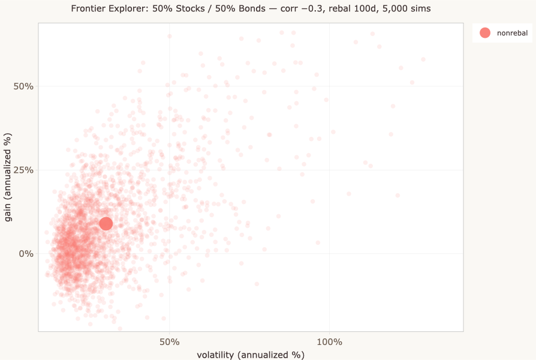
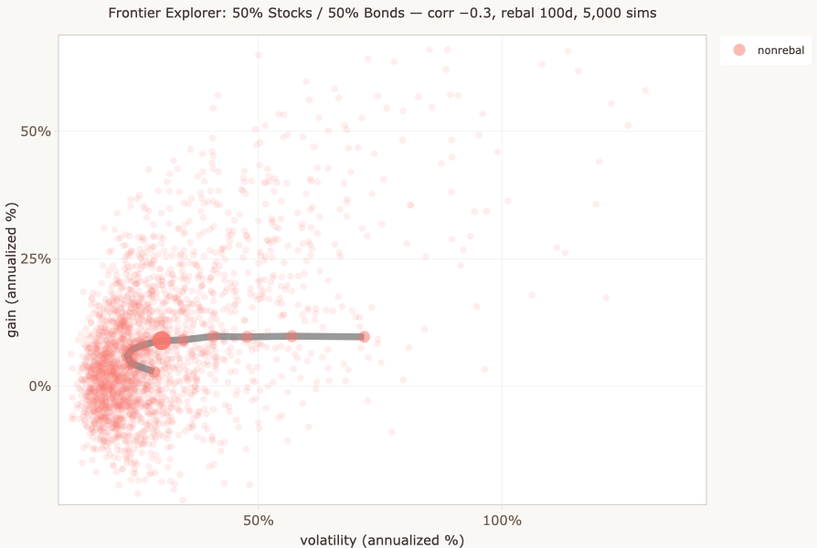

A quick orientation for the Monte Carlo Portfolio Simulator.
Most financial projections give you a single number: “at 7% return, your $10,000 becomes $76,000 in 30 years.” That number is a reasonable summary of expected outcomes, and it's useful input for thinking about the long run. But your actual outcome — the one you'll live with as an investor — can differ substantially from the projection. Your portfolio's gain might be meaningfully better or meaningfully worse. Same for the risk you experience along the way. The spread isn't a small wiggle around the expected value; it can be enormous. This simulator is a way to see those distributions where most tools show you only the points.

If you've encountered the efficient frontier — the bullet-shaped curve from finance textbooks and Wikipedia — this simulator extends that picture in directions the textbook version can't easily go. It shows the distribution of outcomes underneath each frontier point, the consequences of rebalancing as an action over time, and the cases where the textbook frontier becomes misleading. If you haven't encountered the frontier and don't want to, that's fine — the distribution-focused views stand on their own.

A common question about the efficient frontier is “can I use this to pick my investments?” The honest answer is “not directly.” The frontier is sometimes taken as a prescriptive tool, but it's better understood as a conceptual one — a way to summarize the risk-return tradeoff across portfolio mixes under specific assumptions. It can help you reason about whether you're being well-paid for the risk you're taking, and how that tradeoff shifts under different conditions. The simulator makes that reasoning more concrete by showing the distributions and dynamics the textbook frontier abstracts away.
The simulator has two modes (top-level tabs) and several views within each. Rather than walk through them in order, here's a map organized by what you might want to explore.
Pick a stock/bond mix and look at the cloud of dots. Each dot is one simulated future for that mix. The two highlighted dots are the means of the rebalanced and non-rebalanced outcomes. The spread of the cloud around them is the range of futures you might actually experience.
The frontier is the curve of mean outcomes across all stock/bond allocations. The scenario matrix on the left lets you step through different correlations and rebalancing intervals. Under some conditions — particularly negative correlation between stocks and bonds — a rebalanced mixed portfolio can produce a higher average return than 100% stocks. Worth noticing when it does.
Same frontier curves, with the simulation cloud visible underneath. The frontier dots are the means; the clouds are the distributions those means summarize. The gap between the rebalanced and non-rebalanced curves is the rebalancing benefit on average — but individual simulations vary widely.
One pair of dots gets highlighted and the underlying simulated history appears below — portfolio value over time for both strategies, sharing the same price paths but differing in rebalancing. Or visit Single allocation > Single Sim Explorer to step through ten cached simulations in detail.
Shows the point estimates and the simulation parameters for the current run.
Covers why the rebalanced frontier sometimes produces higher returns than pure stocks, the difference between the textbook (analytic) frontier and the simulator's version, and a discussion of the optimization question that the two-asset frontier raises.
One stock/bond mix, simulated many times. The cloud is the distribution of outcomes; the two highlighted dots are the means. The headline insight: the spread is wide, often much wider than retail finance content suggests.
A close-up of one simulated history. Top panel: portfolio value over time for both rebalanced and non-rebalanced strategies. Middle panel: shares held — watch them shift at each rebalancing event. Bottom panel: the underlying simulated prices. Every dot in the Gain vs Volatility cloud has a story like this behind it.
Point estimates (means and standard deviations) for the current run, plus the simulation parameters.
The efficient frontier as it's usually shown — a curve of point estimates across allocations. Two curves are plotted: rebalanced and non-rebalanced. The scenario matrix lets you step through different correlation and rebalancing assumptions.
The same frontier with the simulation distributions visible underneath. Useful for seeing how much the individual outcomes scatter around the frontier means, and for noticing that the gap between the rebalanced and non-rebalanced curves can be small relative to the spread.
The default views show precomputed results, which load instantly. If you want to run your own simulations with different parameters:
The Market assumptions expander lets you change the underlying price dynamics — stock and bond volatility, correlation, expected returns.
It's a demonstration of general principles, not a predictive model of real markets. The simulated price dynamics are stationary (statistical properties don't change over time), which is famously not how real markets behave. Correlations spike during crises. Volatility clusters. Regimes shift. None of that is captured here.
What the simulator does capture is the basic structure of how distributions, time, and rebalancing interact under simplified conditions. The qualitative conclusions — that distributions are wide, that rebalancing has both costs and benefits, that the frontier looks different when you account for multi-period dynamics — hold up under more realistic assumptions, even though the specific numbers wouldn't. The goal is to build intuition, not to predict.